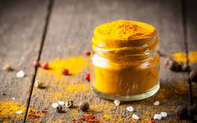

Gotowanie - czysta przyjemność
Strona pełna pysznych przepisów.
Kurczak curry z ryżem
Składniki
- 2 łyżki oleju roślinnego
- 2 płaskie łyżeczki czerwonej pasty curry
- 1 duży ząbek czosnku
- 1 pojedyncza pierś kurczaka
- 1 cebula szalotka (lub 1/2 małej cebuli)
- 1/2 czerwonej papryki
- 2/3 szklanki zielonej fasolki (może być mrożona)
- 200 ml mleka kokosowego
- 1 łyżeczka cukru
- 1 łyżka sosu rybnego (lub sojowego)
Na początku umyj kurczaka i pokrój go na niewielkie kawałki. Umyj paprykę i pokrój na kawałki, pokrój czosnek na cienkie plasterki, pokrój cebulę w piórka. Następnie ugotuj fasolkę na parze. Później weź wok (lub patelnię) i wlej do niego olej, a następnie smaż na niej pastę curry przez niecałą minutę. Dodaj czosnek, cebulę, a następnie włóż kawałki kurczaka i smaż przez ok. 2 minuty. Dodaj paprykę, fasolkę i całość zalej mlekiem kokosowym. Następnie wsyp cukier, sos rybny i całość dobrze wymieszaj. Do dania dodaj ryż jaśminowy i wszystko posyp kolendrą. Gotowe!
 |
 |
| fot. Kurczak curry z ryżem | fot. Przyprawa curry |
|---|---|
Źródła: http://mojehobbi.pl/gotowanie-dla-niektorych-to-prawdziwe-hobby-i-pasja/ https://www.winiary.pl/przepisy/barszcz-czerwony-czysty/?gclsrc=aw.ds&gclid=Cj0KCQjw1PSDBhDbARIsAPeTqrdDU-gjsfgpPJQPGuhcGblDDzk9Eyl5sSXYBeuPDDCVKREI3yu6m3waAv79EALw_wcB&gclsrc=aw.ds https://www.kwestiasmaku.com/przepisy/salatki-z-kurczakiem https://www.marta-gotuje.pl/mac-and-cheese-przepis/ https://stylzycia.radiozet.pl/Kuchnia/Kurczak-curry-z-ryzem-sprawdzony-przepis-24135 https://www.kwestiasmaku.com/kuchnia_polska/nalesniki/nalesniki.html http://rpo-przemyska.pl/gotowaniee.html https://michalwrzosek.pl/przepisy/kurczak-w-kremowym-sosie-curry/
Autor: Amelia Szturo